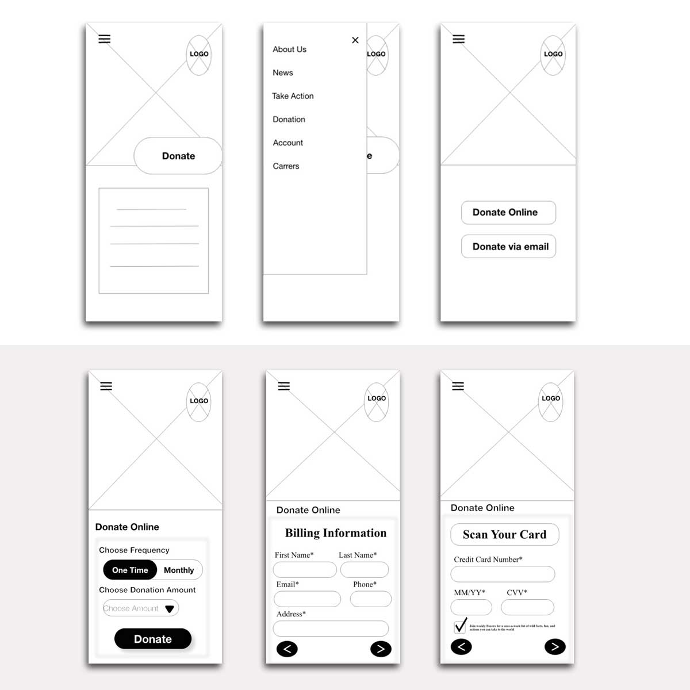

Fox Era
A non-profit mobile app and responsive website to save endangered fox species

A non-profit mobile app and responsive website to save endangered fox species
Fox-era is a non-profit fictional company focused on saving endangered fox species. A dedicated mobile app along with a responsive website were designed to help people volunteer or donate.
No dedicated website or mobile app exists to help people volunteer or donate to save endangered foxes.
Create awareness and enable the public to use Fox-era to donate or volunteer.
December 2021
UX Designer & UX Researcher
I researched many non-profit organizations and government funds for saving endangered species. This helped me understand how to create awareness and reach the general public through personas, interviews, empathy maps, and competitive audits.

Age: 70 | Wildlife Photographer | Denver, Colorado
After ideating and drafting paper wireframes, I created digital wireframes keeping in mind easy access for the "Donate" option.
I designed the most efficient user flow so users can get information about endangered foxes or join the volunteering community.

Most users felt the app would be useful in helping endangered foxes, but had difficulties with functionality and visibility of key features.
Users wanted a "Donate via mail" option in the mobile app and web page.
Users could not access social media links provided in webpage and mobile app.
Many users were not aware of the term "What's Now".
Based on usability study insights, I applied design changes like providing option for "Donate via mail".


Users found that the information across devices helped them learn more about endangered fox species and would love to work towards saving them by donating or volunteering.
More users will use the service if they have knowledge about the product or services. Education and awareness are key to driving engagement.
Want to work together? Let's connect.
Contact Me →